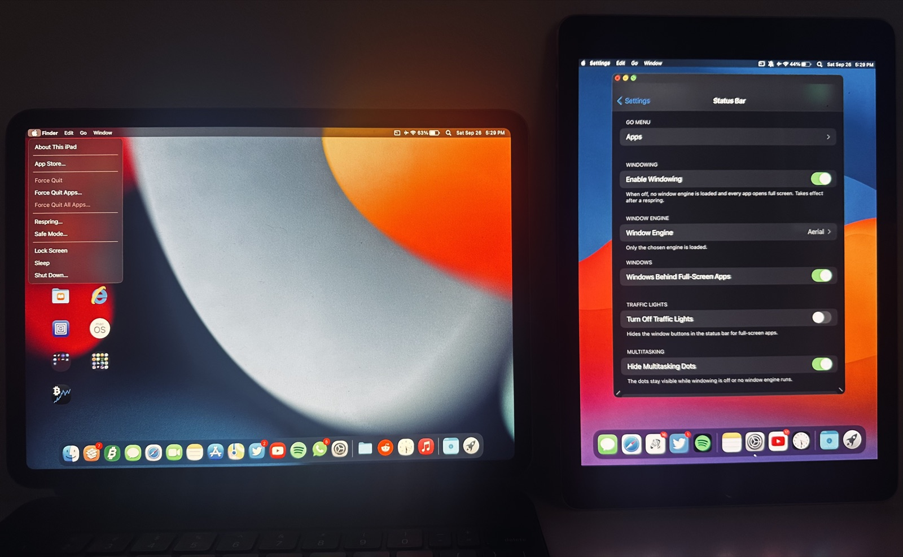

MacStatusBar&Dock



A menu bar with real app menus, Mac windows, a magnifying Dock and much more. It works with just your fingers or with a keyboard and trackpad or mouse, in portrait and landscape — every orientation. Optional extras, like the auto-hiding menu bar, start switched off, and most features have their own switch in Settings.
Features
Status Bar Style: Mac or Stock
Mac gives you the full menu bar, app menus, audio mixing and Mac-style windows. Stock keeps the standard iPadOS status bar; your window engine still runs, with its own settings. Switch between them any time in Settings.
Menu bar with app menus
An Apple menu (About This iPad, App Store, Force Quit, Respring, Safe Mode, Lock Screen, Sleep, Shut Down) and menus for the front app: App, Edit, Go, Window. Menus drop down from the bar just like on a Mac, in every orientation.
Go Menu
Choose and reorder the apps in the Go menu, the same way you'd customize Control Center. New installs start with Calendar, Terminal, Maps and Reynard — remove or add any app, in any order.
Today drop-down
Tap the clock to drop your Today View widgets down from the menu bar, like a menu.
Control Center
Open Control Center straight from the status bar. With BigSurCenter installed, you can also resize its panel with a slider in Settings.
Mac-style banners
Notification banners in the compact macOS style, in the top-right corner.
Mute icon
A small icon in the status bar shows while the iPad is on silent. Its own switch in Settings if you'd rather not see it.
VPN icon
A VPN icon shows while a VPN is connected; its menu tells you which app it runs through, opens that app, or goes to VPN & Device Management.
Mac pointer
With a trackpad or mouse you get the macOS arrow instead of the round pointer, and an I-beam over text. You can choose the style and size.
Haptic Touch menus
Long-press a Home Screen app icon for Force Quit and App Size, or a folder icon to jump straight to one of its apps — each has its own switch in Settings.
Mac windows on three engines
Windows get a Mac look, with a title bar, traffic lights and rounded corners, on the engine you already use: Aerial 3.0 or 5.0, MilkyWay4 (iPadOS 15 only) or Zetsu 1.6.2 or 1.6.6. Only one engine runs at a time, and MacStatusBar&Dock keeps it that way through Choicy or iCleaner Pro. Window positions survive resprings and rotation. Turn on Fit to Window in the Window menu to tile windows automatically — one full, two side by side, three, or four in quarters — with swapping, layout choices and send-to-back all from the same menu.
Dock
macOS-style magnification under the pointer, recent apps (none to 10, plus a suggested or Handoff app after them), indicators for open apps, a Launchpad icon, and a Downloads stack — choose which apps' downloads appear from a link in Settings.
Audio mixing per app
Choose which apps may play sound at the same time and set each one's volume, right from the menu bar.
Auto-hiding menu bar
Optional and off by default: the menu bar slides away and comes back when the pointer touches the top edge, as on a Mac.
Home Screen
A couple of small macOS-style touches, added right on Apple's own Home Screen settings page: no page dots, no icon labels.
Lock Screen
Hide the status bar on the Lock Screen, or skip straight past it after a respring (only works with no passcode set).
Settings integration
Stock-looking pages right below General: Status Bar > Dock > Control Center. Also adds three longer Auto-Lock times (30 min / 1 h / 2 h), an SSH switch and an always-visible Ethernet section, right on Apple's own pages.
Keyboard extras
Off until you turn them on: Cmd-Tab picks the right window, Escape closes menus, Tab can mute, and there are Globe volume keys and brightness/keyboard-backlight keys.
A one-time welcome message
After your first install, a short welcome message points you to Settings. It won't show again, and updates never show it.
Reduce Motion
If you use Reduce Motion in Accessibility, menus, windows and banners settle with a quick cross-fade instead of a zoom or spring.
Built-in safety
Outside iPadOS 15.x/16.x, MacStatusBar&Dock keeps itself off unless you turn on Enable Anyway in Settings. It also checks your hardware and does nothing at all on an iPhone, even one made to look like an iPad by another tweak. If a feature you just turned on is followed by two SpringBoard crashes in a row, that one feature — not the whole tweak — is switched back off automatically, with a note in Settings and a Report a Problem button.
The Mac look is on right after install. Most features have their own switch in Settings > Status Bar and Settings > Dock, and windows only open once you choose Open Apps as Windows.
Which window engine?
Measured on both test iPads: Aerial 5.0 is the recommended window engine on newer and older iPads alike — every window test passed, memory use was the same as the others, and on the older iPad Pro 9.7" it opened windows about twice as fast as Zetsu from a cold start. Zetsu works well too and is a good alternative. MilkyWay4 runs on iPadOS 15 only.
Report a Problem
the Report a Problem button (Settings > Status Bar, and the crash protection's note) opens a new GitHub issue in your browser, filled in with your iPad model, iPadOS version, window engine and its version, and the tweak's version. If the crash protection switched something off in the last 7 days, it adds what it turned off and when, and a few lines naming the tweak's own code that crashed (nothing from other apps or tweaks); on an untested iPadOS version, which of the tweak's switches are on. Nothing is sent by itself: you see the whole text first, can change or delete any of it, and it's only posted if you submit the issue (a GitHub account is needed). Nothing personal is included, and the tweak collects nothing in the background.
Compatibility
| iPad only | MacStatusBar&Dock checks your device and does nothing on an iPhone, even one made to look like an iPad by another tweak. |
| Tested | iPad Pro M1, iPadOS 15.6.1 (Dopamine) |
| Tested | iPad Pro 9.7", iPadOS 16.7.7 |
| Other iPads | iPadOS 15/16 will likely work (untested) |
| Jailbreak | Rootless only |
| External displays (iPadOS 16) | Used as a separate screen (Stage Manager or TrollPad): to use windowed apps on the external display, open them from the App Library on that display. Apps opened from its Dock or from Spotlight open on the iPad, and windows can't be moved between displays yet. For apps anywhere on the external display, turn off Enable Windowing and use Stage Manager. On iPadOS 15 the external display mirrors the iPad, windows included. |
| iPadOS 17 and others | Experimental: off until you turn on Enable Anyway in Settings, at your own risk (untested). Crash protection still works; reports welcome. |
On iPadOS 15, Safari's sound can stop another app that's playing alone — it plays on its own, as on a stock iPad. Control Center's Now Playing controls only ever show one app at a time — usually whichever started playing most recently — even while several apps are playing together with Mix Audio. Stage Manager (iPadOS 16) stays off while windowing runs with a window engine, because two window systems would fight over the same apps. To use Stage Manager, turn off Enable Windowing in Settings > Status Bar; it comes back on by itself. Some apps, like many games, can't run in a window. Open those full screen. The camera only works full screen: iPadOS pauses it for apps in a window. The Camera app always opens full screen; for other apps, switch to full screen while you use the camera. Photos opened from inside the Camera opens full screen. Keep it full screen: turning it into a window then closes Photos (Photos can't change its layout while showing a single photo). Aerial 5.0 has to be activated in its own settings before it can open windows. Until then, apps open full screen, and a note leads you to Aerial's settings.
Both parts switched off? If you turn off both MacStatusBar and MacDock in Settings, their Settings pages go away too. Turn them back on in Choicy (or iCleaner Pro), then respring.
Requirements
- A hooking platform: ElleKit, libhooker, or Substrate
- Choicy or iCleaner Pro (keeps only one window engine loaded)
- Optional window engine: Aerial 3.0 or 5.0, MilkyWay4 0.1.1 (iPadOS 15 only), Zetsu 1.6.2 or 1.6.6. Other versions run as plain windows, without the Mac look.
Changelog
1.0.3
- Experimental fixes for iPadOS 17 and 18 (not tested on those versions yet): the Dock background no longer extends past its edge on the right, the running-app dots sit below the icons instead of on them, and two likely causes of crashes with Split View & Slide Over or Stage Manager are removed. iPadOS 15 and 16 are unchanged.
1.0.2
- Fixed: tapping the Dock icon of an app that is already open full screen now turns it into a window (with Open Apps as Windows on), like its green button. Before, the window vanished again and the app stayed full screen (on some iPads also turned to portrait).
1.0.1
- Fixed: with Aerial 5.0, an app opened from its Dock icon could come up tiny and distorted (with its traffic lights) and stay that way until full screen and back. Windows already affected repair themselves.
- Fixed: with Fit to Window on, a second window opened from its Dock icon lost its tile.
- Fixed: on the Lock Screen (and with it pulled down), only the Apple menu shows: no traffic lights or app menus left from the app that was open.
- iPadOS 17 and newer (experimental): the Status Bar and Dock pages always show up in Settings now, so Enable Anyway can be reached. They are also listed with your other tweaks.
1.0.0
First public release: MacStatusBar, MacDock and Settings pages in one package.
Credits
Window engines
MacStatusBar&Dock gives a Mac look to windows from these engines. Thanks to their developers:
- Aerial by uz.ra
- MilkyWay4 by akusio
- Zetsu by Dcsyhi
Inspiration
Thanks to these tweaks for setting the bar:
- Arrow, Finally. by Andy Ching, for the Mac pointer
- Lynx 2 by MTAC
- Single Mute by 82Flex, for the mute icon
This tweak does not include or modify any of their files.
Version 1.0.0 · iPadOS 15.0–16.7 · by besiktasliseba